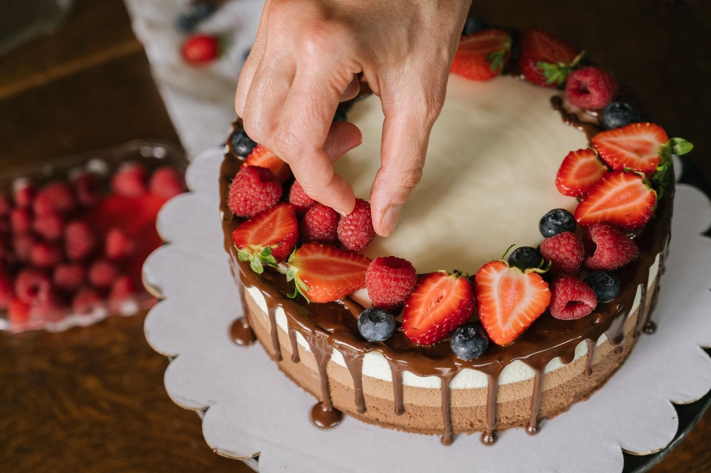

Nossa paixão
Dedicação em cada receita, dos primeiros testes ao acabamento final.
Quem somos
A Doces da Mafel é uma confeitaria fictícia criada para este projeto — um lugar imaginado onde cada receita começa com curiosidade e termina em vontade de compartilhar.
Na nossa história, os primeiros doces nasceram para celebrar os encontros simples: um café demorado, uma visita querida, um aniversário em casa. A dedicação está em escolher bons ingredientes, preparar cada etapa com cuidado e criar sabores que façam esses momentos ficarem na memória.
Descubra nossos doces
O que guia cada receita
Uma pequena coleção de princípios para que cada doce chegue à mesa com significado.
Dedicação em cada receita, dos primeiros testes ao acabamento final.
Atenção à qualidade dos ingredientes e ao preparo cuidadoso de cada doce.
Levar felicidade por meio dos doces e tornar especiais os momentos do dia a dia.
Carinho, criatividade, respeito e compromisso em todos os detalhes.
“Feito com carinho,
para adoçar seu dia.”